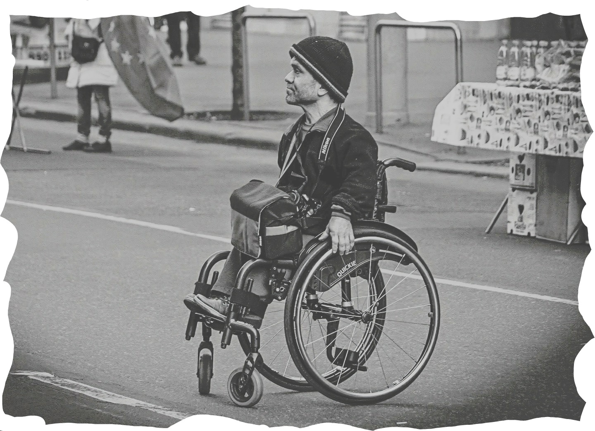

Barrier FREE
- 세계와시민 -
Toggle navigation
Barrier Free
- 세계와시민 -
Home
About
Card news
Information

Barrier free
배리어프리는 장애인 및 고령자 등의 사회적 약자들의 사회생활에 지장이 되는 물리적인 장애물이나 심리적인 장벽을 없애기 위해 실시하는 운동 및 시책을 말한다.
베리어프리 소개 영상
사회는 비장애인 기준으로 이루어졌다. 이러한 불편함이 지속된다면 장애인들은 사회의 주체에서 멀어지게 된다. 장애라는 이유로 사회적 주체로 인정받지 못하는 것은 잘못되었다. 이러한 문제의 개선을 위해서 배리어프리가 필요하다.
read more